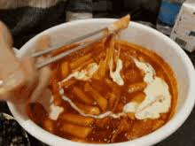

Liste Articles
Tteokbokki
Le topokki est un plat traditionnel et un incontournable de la street food de Corée du Sud, composé de petits rouleaux ou gâteaux de riz gluant cuits dans une sauce pimentée au gochujang.
| Nom | Image | Prix |
| Tteokbokki |  | 2,50 € - 20€ |
Menu